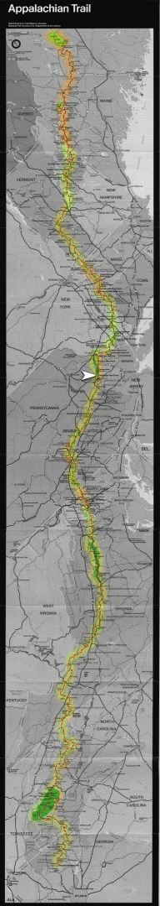

| Home | The Fox | Statistics | Maps | Churches |
StatusConfirmed - The Fox finished the summer at:Confirmed - Delaware Water Gap, PA Confirmed - 1269.8 miles complete (58.64%) Confirmed - 895.7 miles to go (41.36%) The Fox reached New Jersey[Fall 1998] The Fox ended this summer's hike at the Delaware Water Gap National Recreation Area Information Center, just north of Pennsylvania's border with New Jersey. He hiked a total of 1036.2 miles this summer, of which 816.4 were achieved before having to give his shins time off in the middle of summer, and 219.8 miles during the three weeks he continued in September.He will start again where he left off, 889.3 miles from the top of Katahdin. He might attempt to complete the trail next summer, or the summer of two thousand. This will be decided early next year, after he develops a better system for planning. Some other hikers he met on the trail also have a web site, which he wanted us to mention here; their group just finished hiking Katahdin (on Sunday 18th October) and includes Earthchaser and Redgoat. They were hiking with Lemonhead, and Buford and Bluet were following behind them. The Fox's pictures from the trail, and more details on his actual schedule, will be forthcoming on this web site. |

Legend
|